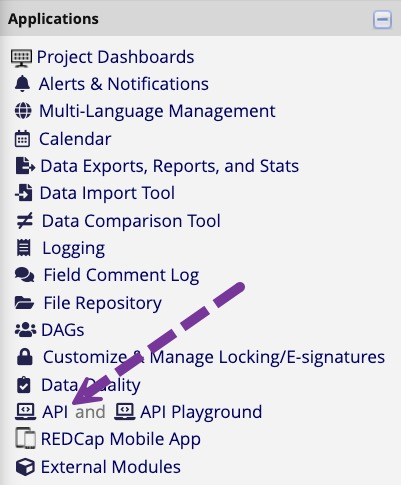

While most people use the “Data Exports, Reports and Stats” Application built into REDCap, another handy method to get data out of REDCap is an API request. An API allows one program to request data from another program. For example, an add-on package in R can request data from your instance of REDCap. Obviously, an R package can not type your user name and password. Instead, you will store an API token, a password, on your machine and then ask R to look up that token and pass it to REDCap whenever you want data.
We have used two R packages to access our REDCap
projects,redcapAPI and REDCapR. Unfortunately,
redcapAPI is no longer being actively developed, and we
have run into problems with it. It had the lovely benefit of exporting
variables, basically using the same variable names as you see in REDCap,
then tagging the variables with the “labels” subjects viewed when
completing the forms.
that people taking REDCap surveys or viewing other forms see.
We have taken the labeling functionality and added it in tidyREDCap.
If your REDCap project has API access enabled, you will see it in the applications on the left side of the screen.

If you don’t see that option, talk to your project leader or the REDCap system administrator.
When you click the link you will be given the option to create an API Token for this project.
Once you have that token created, you can copy and paste it somewhere safe.
Leaders in the REDCap community have developed techniques for safely storing your REDCap API keys. Ask your REDCap systems administrators how they prefer you store API keys on your “local machine”.
The functions that allow you to export data need you to give them your API token. Remember, this is the same information as your username and password. NEVER type that directly in your code. That is if your REDCap API key is “1A2B3CXXYYZZOOMMGOSHNOOOOX1Y2Z3” do NOT do this:
# Do not type your API token directly into your code
tidyREDCap::import_instruments(
"https://redcap.miami.edu/api/",
"1A2B3CXXYYZZOOMMGOSHNOOOOX1Y2Z3" # This is BAD!
)If you do this, anybody who gets a copy of your code will be able to access your REDCap project. Also, whenever your run this line of code, the API token will be saved into your R history files.
You can save your API keys into a “hidden” file containing code that
runs when you start R. That file is called you “.Renviron”. It can be a
bit of a pain to find. So your best plan is to install the
usethis package, which contains helper functions, including
a function to find this file. If you use the RStudio interface, you can
add it using the Packages window pane or run these lines in the console
once.
install.packages("remotes")
remotes::install_cran("usethis")When it comes time to add packages to your copy of R, the
install_cran() function in the remotes package
is superior to the usual install.packages() function
because it will first check to see if you already have the latest
version before bothering to download and install.
After installing usethis you can access your “.Renviron”
file by typing this in your console.
usethis::edit_r_profile()It will cause the file to open.
Create a name for your API key and add a like like this to your .Renviron file:
nacho_anxiety_key="1A2B3CXXYYZZOOMMGOSHNOOOOX1Y2Z3"After adding the line, remember to save the file and completely restart R/RStudio.
Once R restarts, you can access the key like this:
tidyREDCap::import_instruments(
"https://redcap.miami.edu/api/",
Sys.getenv("nacho_anxiety_key")
)If you want to use the redcapAPI or the REDCapR packages directly you can use the same trickery to pass your API key to their functions. For example:
rcon <- redcapAPI::redcapConnection(
url = 'https://redcap.miami.edu/api/',
token = Sys.getenv("nacho_anxiety_key")
)
redcap <- redcapAPI::exportRecords(rcon)This includes a call to Sys.getenv() to grab the key. To
learn more about working with APIs, look here.
If you are curious, when we made these help files, we saved the data
using the saveRDS() function.
rcon <- redcapAPI::redcapConnection(
url = 'https://redcap.miami.edu/api/',
token = Sys.getenv("nacho_anxiety_key")
)
redcap <- redcapAPI::exportRecords(rcon)
saveRDS(redcap, file = "redcap.rds")
If somebody gets access to the files on your machine, they could find
and read your .Renviron file. A more secure option is to use the r
keyring package. It will store an encrypted copy of your
API key in your machine’s credential store (i.e., the “keychain” on
macOS, the Credential Store on Windows, etc.). Consider using it. If you
use it and your machine is stolen, it will buy you more time to find an
internet connection, log into REDCap and change your API tokens (before
the thief can access your data).